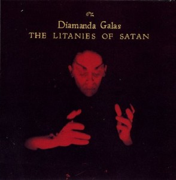
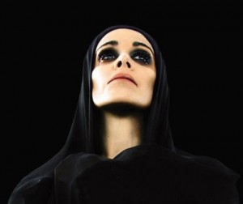
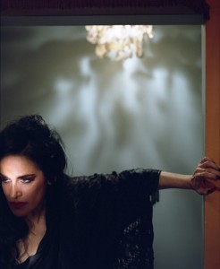
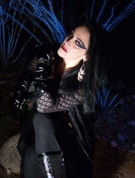

Lanetliler Kraliçesi: Diamanda Galás
Sevgili Prenses,
Varoluşun “amacına” dair inancımız ne olursa olsun, dünyadaki serüvenimize acının dürttüğü bir çığlıkla başlıyoruz ve bu gerçeği pek sevmesek de, burada öğrenmemiz gereken derslerin hatırı sayılır bir bölümünü, acı eşliğinde öğreniyoruz. İnsan deneyiminin böylesine temel ve sevimsiz bir parçasının, sanatta, özellikle temsili olmayan doğasıyla diğer sanat dallarına göre nispeten daha nüfuz edilebilir kalan müzikte sıklıkla ifade bulması, bu açıdan pek şaşırtıcı değil. Halk müziği ağıtlarından blues’a ve acıdan afyon damıtmakta suçlanan arabeske, müzikte acının yorumlanışına, hatta aşırı-yorumlanışına fazlasıyla alışığız.
Ne var ki acı, bireysel ya da toplumsal bazda, tahayyül sınırlarını zorlayan bir büyüklüğe ulaştığında – ağır bir hastalığın, katliamın, salgının ya da benzer bir felaketin kanatlarında gelen, süresiz bir çile ya da düpedüz dehşet şeklini aldığında – sanatın acıyı yorumlama cesaretinden bir şey yitirmediğini söylemek yanlış olur. Özellikle fotoğraf ve videonun gerçekliği dolaysızca aktarma iddiasıyla konfor bulduğumuz bu çağda, düşünmesi zor acıları sanatla yorumlamaya yeltenmek, basbayağı tehlikeli bir girişim gibi gözükebilir. Böylesi bir işe kalkışıp Batı sanat geleneğinin damarlarına işlemiş “acıya asaletle boyun eğme” mitine yaslanmayan ya da soluğu bir nihilizm manifestosunda ya da şiddetin estetizasyonunda almayan yapıtları düşündüğümüzde, akla Goya’nın “Savaşın Felaketleri” çizimleri (1810-1815), Picasso’nun “La Guernica”sı (1937), müzikte Penderecki’nin Hiroşima kurbanlarına ağıdı (1960) ve “Dies Irae”si (1967) ya da Schwartz’ın “Caligula”sı (1975) geliyor.
Sana bugün, ilkgençlik yıllarının Prusya çayırlarına yayılan neşesine gölge düşürmek istercesine, sadece modern müzik sahnesinde değil, siyaset ve kültür alanındaki etkinliğiyle de sindirmesi zor bir radikalizmi cisimleştiren bir isimden, Diamanda Galás’tan bahsedeceğim.
Türkiye’de bilinirliği 90’ların ikinci yarısından itibaren artan Diamanda Galás müziğinin bu kısa tanıtımına “acı”ya vurgu yaparak başlamamın basit bir nedeni var. “Acı”nın, Diamanda Galás evrenindeki önemi kadar, hanımefendinin acıyla kurduğu ilişkinin iki farklı yönüne dikkat çekmek istemem: modern sanatın pek çok çehresine sinmiş “düşünsellik” saplantısının suratına yumruk indiren dolaysızlığına ve insan psikolojisinin basit ve manipülasyona açık oto-sansür mekanizmalarını teşhir eden cesaretine…
Diamanda Galás’ın müziğini deşmeye başlamadan önce, Türkiye’yi ilgilendiren siyasi duruşunu, sözü dolaştırmaksızın açıklamak da yerinde olur. Diamanda Galás, kariyeri boyunca vazgeçmediği ama en açık ifadesini “1914-1923 arasındaki Rum, Ermeni ve Süryani soykırımlarının mağdurlarına” adadığı 2004 tarihli “Defixiones: Will and Testament” albümünde bulan siyasi söylemleriyle, Türk resmi ideolojisinin zahmetsizce şeytanlaştırabileceği “düşman”ı temsil ediyor. Sözkonusu politik duruşun, salt hafıza yoklayıcı liberal-sol bir hümanizma anlayışı üzerinde temellenmediğini belirtelim. Diamanda Galás, bir tartışma kültürünün değil, “ölülerin son arzularının” (“Orders from the Dead”) izinde; histeriden, skandaldan, öfkenin çiğ dışavurumundan çekinmeyen bir tutumun savunucusu. Öte yandan, Diamanda Galás’ın yakın dönem Anadolu tarihini konu eden siyasi söylemlerinde, şu metninde de görülebileceği gibi, somut olmayan kültürel mirasın yok edilmesine özel bir vurgu yaptığını eklemeliyiz.
Diamanda Galás müziği, Galás’ın etnik kökenini, müziklerini iyi bildiği Doğu Akdeniz coğrafyasının zenginliğini, müzik eğitimini ve ABD’de başladığı kariyerinde ilgilendiği ilk türleri yansıtan bir çeşitliliğe, gospel’den jazz’a, rebetiko’dan rock’a, halk müziğinden modern kompozisyona farklı janrlara ve disiplinlere, aynı yırtıcı avant-garde ucu koruyarak açılabiliyor. Fırtınanın gözündeyse, Galás’ın 3,5 oktavlık, opera eğitimli, aşırı uçlar arasında rahatlıkla gidip gelebilen sesi ve çığlıklardan, hırlamalardan, ulumalardan, sayıklayışlardan, kükreyişlerden, kısacası baskın uyaran karşısında aklın ya da öz-kontrolün henüz devreye girmediği boyutta serbest bırakılan tüm “ilkel” ifadelerden de beslenen yorumu yer alıyor.
Galás’ın, Hilmi Tezgör’ün, şamanik bir aracılık ve Antonin Artaud’nun vahşet tiyatrosu 1 referanslarıyla tanımladığı sanatı, saldırganlığı ölçüsünde kuralsız olduğu gibi bir izlenim verebilir. Ne var ki, Diamanda’nın gücü, kılı kırk yaran, çileci ve disiplinli bir çalışmanın ürünü. Bu açıklamalardan sonra, Galás’ın müziğinin, ilkokul seviyesindeki “kulağa hoş gelen ses organizasyonu” tanımı doğrultusunda yakalanacak bir “güzellik”i amaçlamadığını tahmin edebilirsin sanırım. Bu dehşetli vokal virtuoso’nun günümüzün diğer “sesi kuvvetli” popüler figürlerinden, örneğin kitsch burjuva zevkini okşayan “neo-klasik” gırtlaklardan hangi çizgilerle ayrıldığını da bulman zor olmayacaktır.
Diamanda Galás diskografisini derinlemesine incelemeye yerimiz yetmeyeceği üzere, Galás’ın serüvenini kısaca aktarmakta ve öne çıkan yapıtlarını tanıtmakta fayda var. İzmirli Rum bir anne-babanın çocuğu olan ve babasının isteğiyle piyano eğitimi alan Galás, ilk çıkışını, 1979’da, ünlü Avignon festivalinde, Vinko Globokar’ın, Türkiye’de tecrit edilen ve işkence gören bir kadın mahkumun öyküsünden yola çıkarak yazdığı Un Jour comme un autre operasındaki rolüyle yapıyor. Diamanda’nın ilk albümü, Baudelaire’in “Les Litanies de Satan” şiirini avant-garde bir ses kumaşı üzerine psikozuna kuvvet seslendirdiği “The Litanies of Satan” ise 1982’de yayınlanıyor. Koleksiyoncular için özel bir öneme sahip olan bu albümün B yüzünü, sanki A yüzündeki parça çok hafif kalmış gibi; kadınların büyük bıçaklar taşıyarak önderlik ettiği Yunan cenaze geleneğine atıfta bulunan ve Galás’ın “kadınlara güç veren bir ayin” olarak nitelendirdiği “Wild Women With Steak Knives” işgal ediyor. Bu nadide eserin, Galás’ın henüz büyük çaplı skandallar doğurmamış radikal feminizminin ilk parlayışlarından olduğunu belirtelim.
Diamanda’nın küresel boyutta bir provokatör olarak tanınmasıysa, kardeşi Philippe-Dimitri Galás’ı AIDS’e kurban verdikten sonra üzerinde çalışmayı yoğunlaştırdığı, 1984’ten 1991’e kadar farklı formatlarda yayınlanmış materyalden bütünleyip AIDS kurbanlarına ve hastalarına adadığı “The Plague Mass” (Veba Ayini) ile gerçekleşiyor. “The Plague Mass” ile AIDS’lilere “savaş açmakla” itham ettiği, güvenli seks kampanyalarını engellemeye çalışan Katolik Kilisesine öfke kusan Galás, 1989’da, tutuklanmasıyla son bulan bir işgal/protesto girişimine ve bir yıl sonra, New York’taki Saint John the Divine Katedralinde, “ayinin” tümünü, çıplak ve kanlar içinde okuduğu, modern müzik tarihinin en korkunç ve ajitatif performanslardan birine imza atıyor. Böylece, Rock’n Roll’a özgü “şeytani” imaj oyuncaklarıyla oynamak gibi bir niyeti olmayan, ciddiyeti yadsınamayacak bir konu bağlamında Kiliseyi “İsa’nın öğretisini cinsel ayrımcılık yapmak için çarpıtmakla” suçlayan Galás, Kilise tarafından “lanetli” olarak tanımlanma şerefine erişiyor.
Led Zeppelin bass gitaristi John Paul Jones’la ortak çalışması, 1994 tarihli “The Sporting Life”ın, Galás’ın kariyerinde bir başka dönüm noktası teşkil ettiğini söyleyebiliriz. Zira Nick Cave’in Murder Ballads (cinayet balladları) konseptini iki seneyle önceleyerek, “cinai aşk şarkıları” yazmaya odaklanan Galás, bu albümle birlikte radikal feminist söylemlerini de yeni bir seviyeye taşımıştı. Hedefinde erkeklerin olduğu intikam eylemlerini konu alan şarkılardan oluşan bu albümün, erkek rapçilerin (özellikle Snoop Doggy Dogg’un) “orospularına” yapmak istediklerini uzun uzun anlattıkları şarkılardaki cinsiyetçi şiddeti, simgesel düzlemde onlara “iade ettiğini” iddia ediyordu Galás. Ama bununla yetinmeyip şuradan okuyabileceğin beyanatlarıyla Valerie Solanas’ı 2 gölgede bırakıyordu.
Katlanması zor acılar, sanatın çok iştahla ele almak istemediği konulardan olabilir fakat akıl hastalıkları, özellikle psikotik skalada olanlar, bazı sanatçıların kaderi olmanın yanısıra pek çok diğerinin de hayal gücü egzersizlerine malzeme sağlamıştır. Ne var ki zihnin pek sıradan olmayan bu hallerini dramatik bir öğe olarak ele alma becerisi, sözkonusu gerçekliklerin “içeriden” tasvirini yapabilmeyi garantilemez. Kısacası şizofreninin – ve şizofreniye açılan kapı olarak mutlak tecritin yol açtığı derin yabancılaşmanın – resmini zor yaparsın, Prenses. Ama bir gün bu ağır kasvet coğrafyalarına ışık tutan eserlerden mürekkep bir koleksiyon derlenecek olursa, bunun içinde Galás’ın “Schrei 27” kaydının olacağına kesin gözüyle bakabilirsin. Solo vokal ve envai çeşit elektronik tretman ekipmanı için yazılmış 1996 tarihli bu eserde, Diamanda, fiziksel (tecrit) ve ruhsal (şizofreni) yalıtılmışlığın dehşetini ve ağır ama kesin bir tempoda parçalanan bir zihni yansılamaya soyunmuştu ve tarifi zor olana doğru yaptığı yolculukta, Hıristiyan mistik Meister Eckhart’ın metinlerinden ve Eski Ahit’ten (özellikle Eyüp’ün Kitabı) yararlanıyordu. Şizofrenik gerçekliğin, vokalini geliştirmek için üniversite laboratuarlarında LSD alarak egzersiz yapan, ilk dinletilerini akıl hastanelerinde gerçekleştiren Galás’a çok yabancı olduğu söylenemez.
|  |
90’lar boyunca Francis Ford Coppola’nın “Dracula”sı, Oliver Stone’un “Natural Born Killers”ı, Derek Jarman’ın “The Last of England”ı dahil olmak üzere pek çok filme sesi ya da müziğiyle katkıda bulunan Galás, 1998 tarihli “Malediction and Prayer” ile, genellikle solo piyano ve vokal üzerine kurulu, kavramsal ve cüsseli canlı kayıt albümler yapmaya yöneldi.
Bandı biraz daha ileri alıp, bu albümlerden güncelliğini koruyan birine, “La Serpenta Canta”yla aynı yıl, 2004’te piyasaya çıkan ve Galás’ın en güçlü çalışması kabul edilen “Defixiones: Will and Testament”e gelelim. Acının bir damlasının bile “içeride”, dile düşmemiş kalmasına izin vermeyen “Defixiones: Will and Testament”in iki ayrı boyutu olduğundan bahsetmek olası. Diamanda’nın sırtını Doğu Akdeniz geleneğine verip “yas tutan kadın”ı simgelediği ağıt ve anımsayış boyutu ve albümün ismini anlamlandıran tehditkar boyut. Mezar taşlarının üzerine, mezar soyguncularını ya da saldırganları caydırmak amacıyla kazınan “lanet yazıları” – kısacası tehditler – anlamına gelen “Defixiones”te yorumlanan tüm edebi ve müzikal eserler, aynı yoğun kıyamet havasında kimlikleniyor. Fakat albüm, asıl gücünü, derinden, adeta görünmez kanallardan devşirip yeşerttiği meydan okuma duygusundan alıyor. Ermeni şair Siamanto’nun aynı isimli şiiri üzerine kurulu, “The Dance”ten Adonis’in Beyrut güncesi “The Desert”ına; Celan’ın Auschwitz’i anlatan Todesfuge’sinden Henri Michaux’nun “Je Rame”ına, ve Udi Hırant’ın – bence Diamanda’nın grotesk yorumuyla berbat ettiği – “Hastayım Yaşıyorum”una, “Defixiones” parçalarının her birinin, sadece unutuşa değil aynı zamanda ölümün kendisine de baş kaldırdığı söylenebilir. Bu başkaldırı, yıkımın ardında bıraktığı boşluğu, delice de olsa, doldurmaya çalışma çabasını da içeriyor.
|  |  |
Eşsiz ve tüyler ürperten sesi, karanlıkla ahbaplığı ve tehlikeli sularda boğulmadan yüzebilmesi üzerinden, Diamanda’nın tam anlamıyla “Gotik”i bedenleştirdiği – elbette burada Dresden Dolls ya da Twilight’ın kadife tonlu gotik’inden bahsetmiyorsak – Medusa arketipini temsil ettiği, söylemleri ve imajıyla erkeklerin bilinçaltına yapışmış kabussu “dişli vajina” (vagina dentata) imgesiyle bütünleştiği vs. söylenebilir. Tüm bu referanslar, sözkonusu Galás’ın çekincesizliği oldukça, havada kalmayacaktır. Fakat “iyi imal edilmiş”, kendi dolambaçlı soyağacından başka hiçbir köşeye referansta/reveransta bulunmayan eserler ve kimlikler için de kullanılan bu sıfatları Diamanda Galás’a yakıştırırken, Shirley Manson’dan değil, sesini, sesi boğulmuşlara ödünç verirken dinleyicilerine entelektüel bir labirent yerine dipsiz, can yakıcı bir deneyim vaat eden bir figürden bahsettiğimizi hatırlamalıyız.
Gençliğine daha fazla yazık etmemek için bu kısa tanıtımı renklendirecek şarkıları Galás repertuarının daha kolay sindirilebilir bölgesinden seçtim. Diamanda’nın Phil Ochs’un protest gitar müziği kulvarından alıp bir direniş anıtı gibi yükselttiği“Iron Lady” (Demir Leydi) ve Pier Paolo Pasolini şiiri “Supplica A Mia Madre” (Anneme Dua). İlkini, silah kabzalarını yalamaya alışık ama fikirlerden ölesiye korkan, gerekirse dillerimizi kökünden sökmek için kerpeteniyle köşede bekleyen ödlek otoritelere, ikincisini de zarfın üzerinde yazılı adrese, annelere gönderelim.


{kind=link}
{kind=link}
{kind=link}
{kind=link}
{kind=link}
{kind=link}
{kind=link}
{kind=link}
Mutlu Yetkin Bey, Kadim Felsefe’ yi evirip çeviren Bey mi??
Ne diim biz de insan sanıyoruz kendimizi.